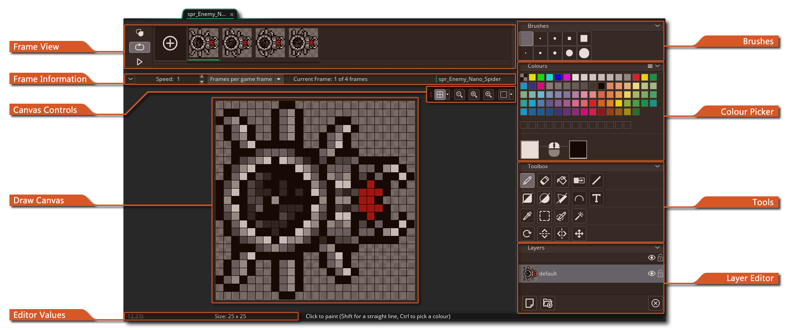
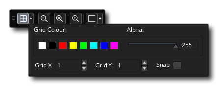
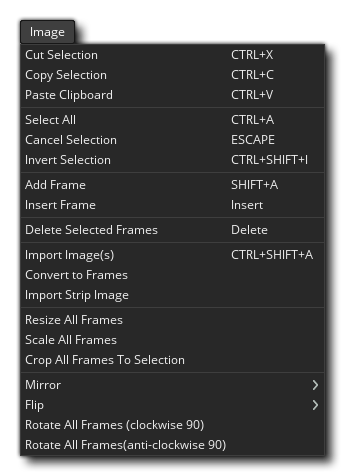
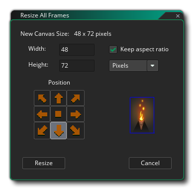
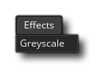

The image editor is where you can create your own sprites or edit those you have imported or created previously. If you have used any image tools previously then this should be familiar to you but there are a few things to note when using the GameMaker Studio 2 image editor which may not be immediately apparent:
- When you create multiple frames, you can draw to them as they animate! So, if you press the play button on the Frame Control bar, and then select a brush and start to draw in the editor window, you'll see that the frames will animate in the editor and what you draw will be added to the corresponding frame in that moment. You can experiment with different frame rates until you get something you like, but once you've got the hang of how this works you'll be creating dynamic sprites and effects in no time.
- You can pull the Image Editor tab off of the main workspace window into it's own window. This can be handy when using multiple monitors, for example.
- When you use the copy functions to, for example, copy a selection of an image, then the selection copied gets added to your brush list. This means that you can select a part of an image and then use it in the rest of the paint tools to draw lines, polygons or just paint freely. The brush can be scaled and blended with a colour too. Note that the Paste functionality is not intended for use internally within the editor as anything you copy is added to the brush list and so can be selected for "pasting" that way. Instead paste is simply for you to capture something from an external program and paste it into the Image Editor.
- You can have multiple layers for each sprite thanks to the handy layer editor. These layers can ordered and even placed in folders to make creating more complex images easier.
Those are just some of the more advanced features that the image editor offers. To find out the full feature range, please read the items below detailing the functions of every part of the editor:
This part of the window shows the frames in the order that they will be animated in. You can click the (+) button to the left to add further frames - or use the Image Menu - and you can also click and drag any of the frames to change its position along the time-line. In the top left of the Frame View you can switch on Onion Skinning
, which means that in a single frame of any sprite animation, you can choose to see any of the preceding or succeeding frames as a semi-transparent layer under the image frame you are currently editing. The great thing about this is that each frame is drawn slightly lighter than the last so you can see how the animation has been progressing from frame to frame while drawing the next one. Enabling this will show some extra controls over the frames which you can click and drag to set the number of preceding frames to show as well as the number of following frames.
Beneath the Onion Skin button, you have the Loop Control button
used to set whether the sprite loops (goes back to frame 1 when the last frame is reached) or ping-pongs (goes backwards through the frames when the last frame is reached). The Play button
at the bottom is for starting/stopping the preview of the animation.
You can click on any frame to select it for editing, and a selected frame will have a Delete icon
at the top corner which you can click to remove the frame from the sprite. You can also click
/
+
on multiple frames to select them together, in which case clicking the Delete icon will delete all the selected frames.
This bar contains the Frame Controls. Here you can set the speed at which the animation frames should be played back using the input box on the left. The frame speed can either be based on "Frames per second", or "Frames per game frame". The total number of frames available are shown to the right along with the current frame that has been selected, and you can collapse this bar (hide it) by clicking on the
icon to the left. Note that the value used here for the animation speed will also set the way the sprite is animated when used in a game, either as a sprite asset on a layer or as a sprite assigned to an instance, although you can modify this at runtime using the appropriate functions and variables.
The canvas controls deal with various aspects of how the main draw canvas and its contents are displayed. The options are:
- Toggle Canvas Grid
: This will toggle on/off the canvas grid. This is a grid that GameMaker Studio 2 draws over the main canvas to divide it into sections, and by default is set to 1px in size. However if you click the Grid Menu icon
you will open the grid options:  These options permit you to set the grid colour and alpha, as well as the cell values for the grid along the X and Y axis. You also have an option to enable or disable grid snapping here (disabled by default).
- Canvas Zoom Controls
: These buttons control the current canvas zoom level. You can zoom in or out and clicking the
button will reset the canvas to be 1:1 with the image being edited. Note that you can also zoom in and out using the
, and pressing
to make the entire room canvas fit within the current editor workspace (this will zoom in/out as appropriate to make it fit).
- Split Canvas
: Clicking this will cycle between splitting the canvas horizontally, vertically keeping it a single a single canvas. When in split canvas view, each canvas will have its own set of Canvas controls so you can zoom one in and the other out, for example, and you can edit either canvas with the changes being reflected in the other canvas. To change the canvas view toggle, you can click the Split Options
This is the main editing window for your images. Here you can apply any of the tools on the right to paint on the currently selected layer. You can paint with either the left or the right mouse button (and assign a colour to each from the colour picker) and use any of the brushes defined from the top right of the editor. You can also use
+
This small bar at the bottom shows the different values for the mouse position and width and height of the selection tools in the editor.
Here you can select the brush to paint with. By default you have a selection of different sized square and round brushes to use, but you can easily create your own brush by painting on the image layer, and then selecting the part you wish to use for the new brush and using
key and it will be removed.
The top of this section has a number or predefined colour swatches that you can choose from, and they can be assigned to the left
mouse buttons respectively by clicking on them with either button (you can also swap the colours between each button by clicking the arrow icon in beside the swatches). The colours selected will be shown below as swatches beside the image of the mouse, and you can then click these to open the Colour Picker window:
From this window you can define the colour using any of the available sliders and gadgets, or you can input values directly for the RGBA values or HVS values. Note that if you double click
So, you can create a custom colour palette in a sprite image and then use that to set the palette for any other sprite in the resource tree, or you can open a sprite image and import the colour palette from any other sprite in the resource tree.
Below we list the tools that are available by default with GameMaker Studio 2 - note that all tools can be used with the left


This is the pencil tool. It uses the selected brush to paint in the selected colour for the mouse button, and you can set the size from the top bar of the image editor as well as enable/disable smoothing (interpolation). Note that you can also resize and scale any brush by holding down + Z then clicking

This is the eraser tool. It uses the selected brush to erase an area on click from either mouse button. Selecting this will also add extra tools to the top bar of the editor to permit you to scale the brush or enable/disable smoothing (interpolation). 
This is the paint bucket tool. This will fill in an area of the image based on the chosen alpha tolerance setting, which you can change using the slider shown in the top bar of the editor. 
This is the colour remove tool. When you select it, you can then click 
This is the colour replace tool. When you select it, you can then click This tool will draw a line between two points. Click once with either button to create the first point and then click again elsewhere create another point and join them. The line will be drawn using the selected brush to create the outline, and you can edit some of the brush properties using the top bar of the editor (size, smoothing (interpolation), etc...). 
This tool will draw either a filled or an outlined rectangle. If you click in the top left of the icon, it will be outlined, while clicking the bottom right will be filled and if you require both then you can select that option from the top bar of the image editor (or use and click to draw from the centre of the mouse position.

This tool will draw either a filled or an outlined ellipse. If you click in the top left of the icon, it will be outlined, while clicking the bottom right will be filled and if you require both then you can select that option from the top bar of the image editor (or use 
This tool will draw either a filled or an outlined polygon. If you click in the top left of the icon, it will be outlined, while clicking the bottom right will be filled and if you require both then you can select that option from the top bar of the image editor (or use 
This is the spline tool. It uses the selected brush to create a spline. You click and hold the mouse button to set a point and then drag the mouse to generate the spline, releasing the mouse and repeating to add further points and curves. The spline will be drawn using the selected brush, which can be edited using the top bar of the editor to set size and smoothing (interpolation). The top bar also has a setting for Iterations which will define how smooth the resulting spline is (lover values will be rougher, higher smoother, and the default value is 10). 
This is the text input tool. It creates a new text layer where you can type anything you need. You can set the font to use as well as the formatting from the top bar of the image editor. 
The eye-dropper tool permits you to sample a colour from the image currently being edited. 
With this tool you can generate a rectangular selection. You can cancel a selection from the Image menu or pressing .
With this tool you can "paint" a selected area using any of the brushes, including custom brushes. All the same keyboard shortcuts apply as for the Pencil tool. 
The magic wand selection tool will select areas of the same colour based on the tolerance value set. If you tick "Colour only" then alpha value will not be taken into consideration. You can cancel a selection from the Image menu or pressing This is the rotate tool. If you have an area selected using the Selection tool, then clicking this will permit you to rotate the selected area by an arbitrary amount from 0° to 360°. If you do not have an area of the image selected then this will permit you tyo rotate the current brush. To rotate, simply hold down the left mouse button 
This is the mirror tool. Selecting this will mirror the current brush along the vertical axis. This option does not create a new brush and will only affect how the current brush is drawn. 
This is the flip tool. Selecting this will mirror the current brush along the horizontal axis. This option does not create a new brush and will only affect how the current brush is drawn. 
This is the pan tool. When you select this, you can then click
You can create layers in the image editor for different parts of your image, and these layers can be manipulated and drawn to using the various brushes and tools. To create a new layer, simply click the
icon, and to remove it again the
icon. Layers can also be ordered by clicking
button and then dragging layers into them. If you double click
Here you can name the layer as well as set the blend mode (the way that it should be "mixed" with the layers beneath), choosing from normal, additive, subtractive or multiply blends. Finally you can set the opacity (transparency) of the layer with a slider, but note that this is cumulative with the actual alpha value of individual pixels - for example, if you have pixels that are 50% opaque and set the layer opacity to 50%, the final pixels will be drawn at 25% opacity.


Context Menu
Apart from those tools within the image editor itself, there are
also a number of extra tools available to you from the Menu Bar at
the top of the IDE: 
These menus are explained below:
 The Image menu has the following options:
- Cut Frame / Selection - Cut the frame or selection from the image (depending on Editor focus). If cutting a selection, this will add it to the brushes.
- Copy Frame / Selection - Copy the frame or the selection from the image (depending on Editor focus). If copying a selection, this will add it to the brushes.
- Paste Frame / Selection - Paste the frame from the clipboard, or paste the selection from the clipboard to the image (depending on the current focus of the IDE). When pasting into an image, you should note that this option is designed only for use with clipboard data from external programs. When you cut or copy to the clipboard from an image in the Image Editor, this is added to the brushes in the top right of the editor, and you should select a brush to draw with the cut/copied selection rather than try to paste it into the image. Also note that a number of programs will have issues pasting transparencies from the clipboard into GameMaker Studio 2 image editor due to the format used by the clipboard.
- Select All - Select the full image.
- Cancel Selection - Clear any selection from the image.
- Invert Selection - Invert the current selection.
- Add Frame - Add a new frame to the sprite.
- Insert Frame - Insert a new frame after the one currently showing.
- Delete Selected Fames - Remove the selected frame from the sprite (you can use
- Import Image(s) - Load an image to be used as a frame from disk. Note that you can load multiple frames at once by selecting multiple individual files to import in the explorer window. Once you have selected your file or files you will be shown the following Import window:
Here you can choose how the imported image should be added to the current sprite, permitting you to resize the entire draw canvas, crop or pad it, and also set the "anchor" position for placing the new image(s).
- Convert to Frames - This option will convert a single image into a number of separate frames. You must first have created a single frame with all the parts of the animation in it (or imported a single strip image) like the one shown below:
Since this is a single image and we want to convert it into individual frames, we can use this option which will then open the following window:
Here you can set how the single image should be split to create the frames, setting the number of frames, the width and height of the frames and any including any offset values.
- Import Strip Image - This option will open a file explorer and prompt you to look for a single strip image file to be used to create frames from. Once selected an image the Import strip window will open, exactly the same as for the Convert To Frames option shown above.
- Export to PNG - Selecting this option will export the sprite as a single PNG image. If the sprite has more than a single image, then a "strip" sprite will be created with all the images, one after another, and the save file name will automatically be appended with "_stripX", where "X" is the number of frames exported. For example, a five frame sprite will be exported as "sprite_name_strip5.png".
- Resize All Frames - When you select this option it will open the following window where you can set the way that you want to resize all the animation frames that comprise the sprite:  You can choose to either Scale the image, or to Resize canvas. If you choose to scale theimage then you simply select the new width and/or height for each frame, whether to scale using the same aspect ratio, and also whether to scale in pixels or percent. Note that when scaling you can enable interpolation on or off, where having it on will case the pixels to blur or "smear" as the image is scaled (in general, for hi resolution art you want this on, but for pixel art you want this off).
The option to resize the canvas will not alter the pixels within the image but instead increase or decrease the size of the canvas that the images are being drawn on. You can set where the "anchor" for the resize should be using the arrow icons, then set the new size (in pixels or as a percentage) as well as set whether to maintain the aspect ratio of the original frames. Note that making the frame smaller than the original sprite images will crop the pixels.
- Crop All Frames To Selection - This option will only be available when you have an area of the image selected in the main draw canvas. When you then choose this option, the image being edited (and all other frames in the animation) will be cropped to the boundaries of the selection.
- Auto Trim All Frames - This option permits you to trim all the zero-alpha pixels from around the edges of a sprite. This will take into consideration all image frames within the sprite, so each side will crop to the edge of whichever frame has the furthest non-zero alpha pixel.
- Reverse Frames - Selecting this will simply reverse the frame order for the sprite.
- Mirror - This option permits you to mirror either the current frame all all the frames that comprise the sprite along the vertical axis.
- Flip - This option permits you to flip either the current frame all all the frames that comprise the sprite along the horizontal axis.
- Rotate all Frames (clockwise 90°) - This option will rotate all the frames of the animation 90° clockwise.
- Rotate all Frames (anti-clockwise 90°) - This option will rotate all the frames of the animation 90° anti-clockwise.
The View menu has the following options:
- 1:1 - Scale the image to be 1:1 with the resolution (ie: actual size) and center it in the image edit window.
- Fit Screen - Scale the image to fill the image edit window.
- Toggle grid - Toggle the pixel grid. This is the same as the grid button found in the Canvas COntrols (explained further up this page).
- Onion Skin Settings - Change the onion skin settings. This will open the following window where you can set the frames shown by the onion skin button, as well as the opacity and colour of the skinned frames.
 The Effects menu is where you can add your own custom effects plugins, and has the following effects by default:
- Blur - Apply a blur effect to the image. You can set the intensity as well as the type of blur to use (box or gaussian) and set whether to only blur along the horizontal or vertical axis, or along both. You can then choose to apply this to only the current layer, visible layers or all layers.
- Greyscale - Desaturate the image by a determined amount. You can choose to apply this to only the current layer, visible layers or all layers.